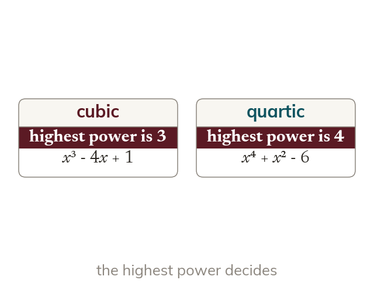

Naming by degree
A polynomial is named by its highest power of x. The number of terms does not matter. A cubic has x³, a quartic x⁴ and a quintic x⁵.
A polynomial is named by the highest power of x in it, so a cubic has x³, a quartic has x⁴ and a quintic has x⁵. The number of terms does not matter.